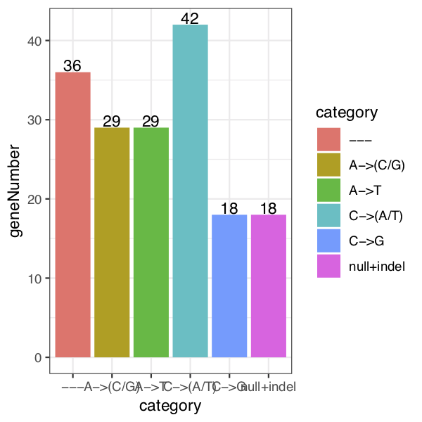
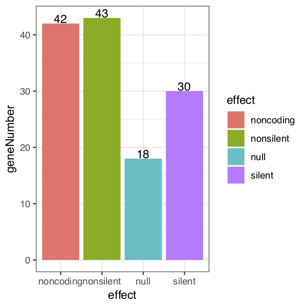
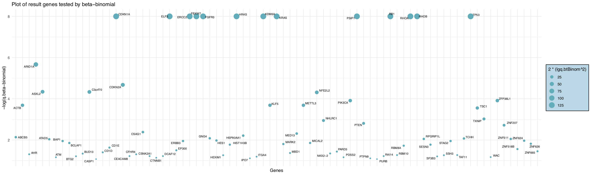
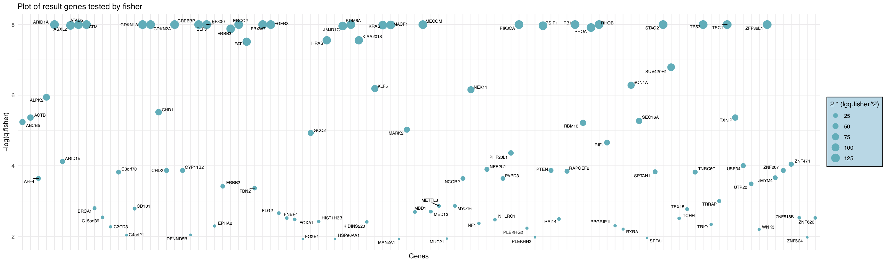
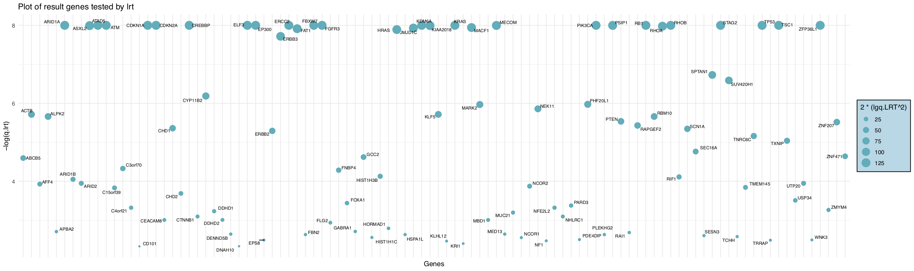
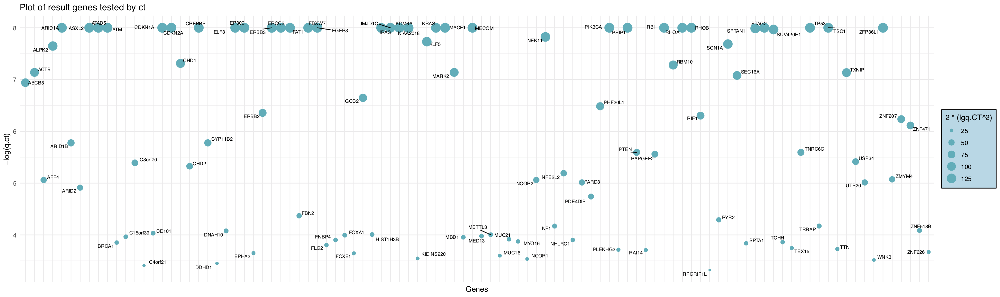
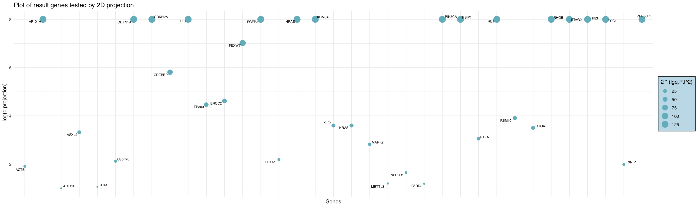
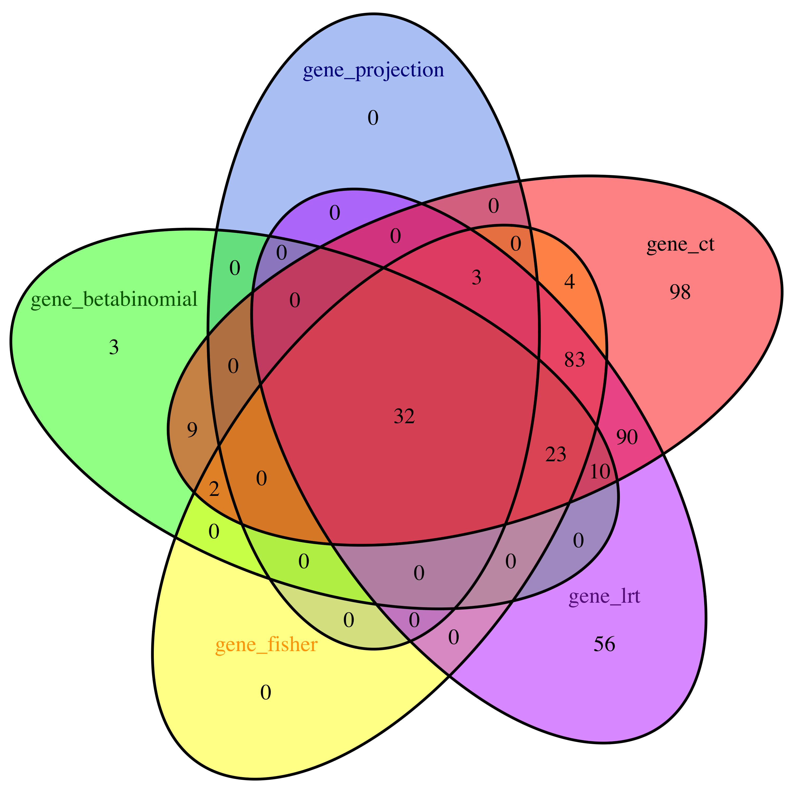

DriverGenePathway vignetteDriverGenePathway.RmdInstalling the package. To install the DriverGenePathway package, the easiest way is through bioconductor:
if (!requireNamespace("BiocManager", quietly=TRUE))
install.packages("BiocManager")
BiocManager::install(DriverGenePathway)Other ways to install DriverGenePathway is to first download the appropriate file for your platform from the Bioconductor website http://www.bioconductor.org/. For Windows, start R and select the Packages menu, then Install package from local zip file. Find and highlight the location of the zip file and click on open. For Linux/Unix, use the usual command R CMD INSTALL or install from bioconductor.
Loading the package. To load the DriverGenePathway package in your R session, type library(DriverGenePathway).
Help files. Detailed information on DriverGenePathway package functions can be obtained in the help files. For example, to view the help file for the function DriverGenePathway in a R session, use ?DriverGenePathway.
The main purpose of DriverGenePathway is to identify significantly important mutated genes and gene sets (pathways) that are responsible for cancer, called driver genes and driver pathways, thus this package contains two main functions, DriverGenes and DriverPathway, aimming respectively at searching driver genes and driver pathways. For DriverGenes, we provided 5 methods of hypothesis test. The process mainly consists of three sections. First the mutation and coverage data are preprocessed after guaranteed available. Then with covariate data, the background mutation rate for each gene is calculated. Finally the significant genes are discovered via hypothesis test methods. Regarding DriverPathway, a de novo method is employed to search the driver pathway. It models an optimal submatrix function based on coverage and mutual exclusivity, which are basic characteristics of driver pathways. In addition, the submatrix optimization problem (a quadratic programming problem) is solved by genetic algorithm.
DriverGenes
To run DriverGenes, 3 input data sets and a directory of chromosome files are required. The first data set is mutation MAF(Mutation Annotation Format) of a paticular cancer type, containing information of mutations. The second is coverage data, containing information of coverages. The third data set is covariate data, which contains values of covariates, and is used for background mutation rate discovery. In addition, the chromosome files directory can be either hg19 or hg38, and the hg19 directory is available at http://www.bioconductor.org/.Each of these 3 data sets are matrix objects. As example, small data sets are available in the DriverGenePathway package.
library(DriverGenePathway)
data(SampleMutationMaf)
data(SampleCoverage)
data(SampleCovariate)
head(M)## Hugo_Symbol Chromosome Start_position End_position
## 1 TP53 17 73370 73371
## 2 TP53 17 73357 73378
## 3 TP53 17 72707 72707
## 4 TP53 17 74684 74699
## 5 MYH4 17 2854999 2854999
## 6 TP53 17 73600 73601
## Variant_Classification Reference_Allele Tumor_Seq_Allele1
## 1 Frame_Shift_Del AA -
## 2 Frame_Shift_Del CCACACTATGTCGAAAAGTGTT -
## 3 Frame_Shift_Del C -
## 4 Frame_Shift_Del ACCATTGTTCAATATC -
## 5 Frame_Shift_Del T -
## 6 In_Frame_Ins - GAT
## Tumor_Seq_Allele2 Tumor_Sample_Barcode is_coding is_silent categ
## 1 - LUSC-18-3407-Tumor 1 0 7
## 2 - LUSC-18-3409-Tumor 1 0 7
## 3 - LUSC-18-3416-Tumor 1 0 7
## 4 - LUSC-22-4593-Tumor 1 0 7
## 5 - LUSC-22-5474-Tumor 1 0 7
## 6 GAT LUSC-22-5485-Tumor 1 0 7## gene effect categ coverage
## 1 ALOX12B noncoding A(A->C)A 14
## 2 ALOX12B noncoding A(A->C)C 5
## 3 ALOX12B noncoding A(A->C)G 30
## 4 ALOX12B noncoding A(A->C)T 6
## 5 ALOX12B noncoding A(A->G)A 14
## 6 ALOX12B noncoding A(A->G)C 5## gene expr reptime hic
## 1 ALOX12B 1528802 272 26
## 2 ALOX15B 1528802 272 26
## 3 ALOXE3 1455014 202 31
## 4 ARHGEF15 772200 257 20
## 5 ATP1B2 2069567 213 34
## 6 AURKB 870950 218 18First of all, the availability of input data should be guaranteed. Items in MAF such as “gene”,“patient”,“mutation effect” and “mutation category” are preprocessed. Then mutation categories are assigned for each mutation. The covariate data which may include “NA” are preprocessed by filling the missing values through clustering.
After preprocessing, the output data including mutation, coverage and covariate data are used to calculate background mutation rate. The parameter bmr, which represent the default background mutation rate is set 1.2e-06 initialy, could be modified. This process outputs a list of matrix which is a intermediate result, will then be used in varified specific gene detecting methods.
Here we present a variate of methods of hypothesis test to detect driver genes, i.e. beta binomial distribution test, Fisher combined P-value test, likelihood ratio test, convolution test and 2D-projection method. The default mode is allTest, which runs all above hypothesis tests.
The function outputs txt files of result significant genes.
DriverGenes
Here is a sample of the usage of DriverGenes. Note that the function relies on the chromosome file directory, which is too big to be integrated in the package. Make sure to set the workspace with the above mentioned folder. For meanings and usages of parameters, see help documentation.
DriverGenes(Mutation = M, Coverage = C , Covariate = V, chr_files_directory = "hg19",categ_flag = NaN, bmr = 1.2e-6, p_class = "allTest", sigThreshold = 0.1)The output of DriverGenes includes preprocessed results and significant genes, saved in two folders automaticaly. The preprocessed result is consist of a txt file of mutation categories as well as 2 pdf plots, showing the number of genes of each category and each effect. We take BLCA data as an example to show the results.


The result of significant genes includes top genes with their p-values and q-values saved as csv file. A table of all q_values is also generated.
## gene p.btBinom q.btBinom
## 1 CDKN1A 0 0
## 2 ELF3 0 0
## 3 ERCC2 0 0
## 4 FBXW7 0 0
## 5 FGFR3 0 0
## 6 HRAS 0 0## gene p.fisher q.fisher
## 1 ARID1A 0 0
## 2 ATAD5 0 0
## 3 ATM 0 0
## 4 CDKN1A 0 0
## 5 CDKN2A 0 0
## 6 CREBBP 0 0## gene p.lrt q.lrt
## 1 ARID1A 0 0
## 2 ATAD5 0 0
## 3 ATM 0 0
## 4 CDKN1A 0 0
## 5 CDKN2A 0 0
## 6 CREBBP 0 0## gene p.ct q.ct
## 1 ARID1A 0 0
## 2 ATAD5 0 0
## 3 ATM 0 0
## 4 CDKN1A 0 0
## 5 CDKN2A 0 0
## 6 CREBBP 0 0## gene p.projection q.projection
## 1 ARID1A 0 0
## 2 CDKN1A 0 0
## 3 CDKN2A 0 0
## 4 ELF3 0 0
## 5 HRAS 0 0
## 6 KDM6A 0 0## gene q.btBinom q.fisher q.lrt q.ct q.projection
## 1 ARID1A 2.155244e-06 0.000000e+00 0.000000e+00 0.000000e+00 0
## 2 CDKN1A 0.000000e+00 0.000000e+00 0.000000e+00 0.000000e+00 0
## 3 CDKN2A 2.114144e-05 0.000000e+00 0.000000e+00 0.000000e+00 0
## 4 ELF3 0.000000e+00 0.000000e+00 0.000000e+00 0.000000e+00 0
## 5 HRAS 0.000000e+00 1.787526e-08 2.846969e-09 5.108065e-11 0
## 6 KDM6A 0.000000e+00 0.000000e+00 0.000000e+00 0.000000e+00 0A corresponding plot showing gene significance by q-values is saved as pdf file, named after the hypothesis test method adopted. If p_class is set “allTest”, a venn plot showing the number of common genes is also generated.






DriverPathway
The input data is a mutation matrix for which a sample is shown below.
## IFRD2 RAPGEF1 BMPR1B CDKN2C NF2 PAK3 ERAS SRC MAP2K6 CDKN2B NOTCH2
## L_16616 0 0 0 0 0 0 0 0 0 0 0
## L_17222 0 0 0 0 0 0 0 0 0 0 0
## L_16951 0 0 0 0 0 0 0 0 0 0 0
## L_16921 0 0 0 0 1 0 0 0 0 0 0
## L_16963 0 0 0 0 0 0 0 0 0 0 0
## L_17152 0 0 0 0 0 0 0 0 0 0 0
## JUNB JAK3 ACVRL1 PDGFRB STAT5A MYC RAB6C FBXW7 SLC7A4 CDK7 RALB
## L_16616 0 0 0 0 0 0 0 0 0 0 0
## L_17222 0 0 0 0 0 0 0 0 0 0 0
## L_16951 0 0 0 0 0 0 0 0 0 0 0
## L_16921 0 0 0 0 0 0 0 0 0 0 0
## L_16963 0 0 0 0 0 0 0 0 0 0 0
## L_17152 0 0 0 0 0 0 0 0 0 0 0
## HRAS FYN STAT3 NRK PTPRG KIAA1804 FLT1 VAV3 ACVR1B EPHA3 ROCK1
## L_16616 0 0 0 0 0 0 0 0 0 0 0
## L_17222 0 0 0 0 0 0 0 0 0 0 0
## L_16951 0 0 0 0 0 0 0 0 0 0 0
## L_16921 0 0 0 0 0 0 0 0 0 0 0
## L_16963 0 0 0 0 0 0 0 0 0 0 0
## L_17152 0 0 0 0 0 0 0 0 0 0 0
## MAP2K5 EPHB6 MERTK EPHA7 RALA RELA IKBKB CDH4 NOTCH4 PTPN11 ERCC2
## L_16616 0 0 0 0 0 0 0 0 0 0 0
## L_17222 0 0 0 0 0 0 0 0 0 0 0
## L_16951 0 0 0 0 0 0 0 0 0 0 0
## L_16921 0 0 0 0 0 0 0 0 0 0 0
## L_16963 0 0 0 0 0 0 0 0 0 0 0
## L_17152 0 0 0 0 0 0 0 0 0 0 0
## PRKCB1 STAT5B PFTK1 MAP3K3 CHEK1 SHC3
## L_16616 0 0 0 0 0 0
## L_17222 0 0 0 0 0 0
## L_16951 0 0 0 1 0 0
## L_16921 0 0 0 0 0 0
## L_16963 0 0 0 0 0 0
## L_17152 0 0 0 0 0 0The DriverGenePathway package also provides a de novo method based on mutual exclusivity and coverage to search driver pathway. The input of function “de_novo_driver_pathway” includes a mutation matrix for which a sample is shown below.
data(SampleMutationMatrix)
head(mutation_matrix)The “de_novo_driver_pathway” uses the Genetic algorithm as optimization method, for which some parameters are supposed to be set. The parameters have default values, see the help documentation. In order to reach the optimum result, it is suggested that the parameters be set manually. Underneath goes a sample of this function, which outputs a list.